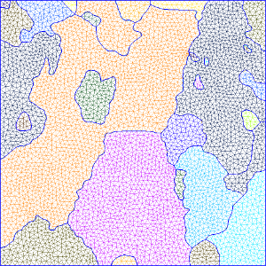
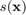
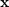
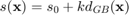
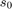
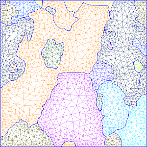
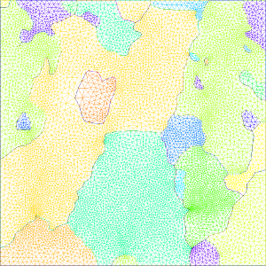

Contents
setMTEXpref('generatingHelpMode',true); % Avoid some artefact (fix issue #5)
mtexdata small [grains, ebsd('indexed').grainId]=calcGrains(ebsd('indexed')); ebsd(grains(grains.grainSize<3))=[]; % Remove small grains grains=calcGrains(ebsd('indexed')); G=gmshGeo(grains);
ebsd = EBSD
Phase Orientations Mineral Color Symmetry Crystal reference frame
0 1197 (32%) notIndexed
1 1952 (52%) Forsterite LightSkyBlue mmm
2 290 (7.8%) Enstatite DarkSeaGreen mmm
3 282 (7.6%) Diopside Goldenrod 12/m1 X||a*, Y||b, Z||c
Properties: bands, bc, bs, error, mad, x, y
Scan unit : um
Basic use
The geometry described by the object G can be meshed using the Gmsh software as follows:
mesh(G,'default.msh')
The above command results in a 1 element thick mesh, consisting in linear wedge elements (6-node 3D elements. The element size is (roughly) equal to the EBSD resolution.
Constant element size
The default element size can be set as follows:
mesh(G,'constant_elmtSize.msh','ElementSize',50)
The resulting mesh cannot be (easily) displayed in MATLAB. Thus, the following illustrates the geometry when opening the mesh file with Gmsh:

The unit here is the same as the EBSD map (ususally µm).
Size gradient
Let  be the local element size at coordinates . The element size can be set as an increasing distance from the grains boundary such that:

with:
-  the element size at grain boundaries
 the euclidean distance from the closest grain boundary.
the euclidean distance from the closest grain boundary.
If one wants to mesh with element size equal to 50 at grain boundaries and a slope of k=0.5:
mesh(G,'sizeGradient.msh','ElementSize',50,'gradient',0.5);

If you need finer control over the element size (for instance if you want to refine the mesh in specific grains), see advanced options for meshing.
Element size Depending on the curvature of grain boundaries
The local curvature of grain boundaries can be used to set the element size. For instance, the following command use 5 nodes to describe a full circle:
mesh(G,'curvature.msh','Curvature',5);

Element type
The default element type for meshing is linear wedge. It can be changed to hexahedron (or brick element).
mesh(G,'brick.msh','ElementType','Hex');

Note: In this case, the mesh will be hex-dominated. Indeed, the resulting mesh may still contain some wedge elements. To avoid it, use 'HexOnly' option instead.
Tetrahedron can also be used:
mesh(G,'tet.msh','ElementType','Tet');
If you wants to work in 2D only, use triangular ('Tri') or quandrangular ('Quad') elements instead:
mesh(G,'Tri.msh','ElementType','Tri');
mesh(G,'Quad.msh','ElementType','Quad');
Again, 'Quad' results in quad-dominated mesh. For pure Quad mesh (no triangle), use 'QuadOnly'.
Element order
The default element order is 1 (linear elements). It can be changed with the ElementOrder option. E.g.:
mesh(G,'brick-quadratic.msh','ElementType','Hex','ElementOrder',2);
Periodic mesh
Periodic conditions can be used on X or/and Y direction for meshing. It consists in ensuring that nodes at opposite borders are at the same coordinates. This is usually requested for periodic conditions in FEM in order to take into account the medium surrounding the RoI.
mesh(G,'Periodic-x.msh','elementSize',100,'periodic','x');
mesh(G,'Periodic-xy.msh','elementSize',100,'periodic','both');
Dump the geometry in an ASCII file
The geometry can be exported into a Gmsh-readable (and somehow human-readable) format using the following command:
savegeo(G,'geometry.geo')